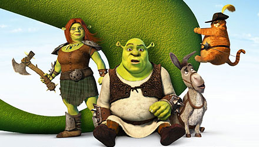

<!DOCTYPE html>
<html lang="pt-br"> 

</html>
     <head> 
           <title>tudo errado</title>
        
     </head>
      <header>
        
        <h1>Shrek Para Sempre</h1>
      </header>
      <main> 
        <h2>Shrek 6 quando?</h2>
        <p>Com o lançamento de Shrek para sempre, quarto e último filme sobre a saga do adorável ogro, a Dreamworks finaliza mais uma franquia de sucesso que não conseguiu superar a hegemonia geral da Disney/Pixar na competitiva indústria de animação, porém adicionou um toque de humor irreverente à uma inesquecível "quadrilogia" ao usar a metalinguagem dos contos e personagens infantis consagrados pela Disney e a junção de elementos mais pop satíricos para subverter a animação de uma forma mais cool e despojada, e dar um tom simpático à paródica crítica aos estúdios Disney/Pixar usando um casal que inverte o conceito de beleza física do herói e da bela princesa: Shrek e Princesa Fiona, dois ogros corajosos e rebeldes, donos de um caráter virtuoso, mas feios de doer. Diferente da Pixar, a Dreamworks ainda não tem a habilidade de humanizar a animação e roteirizar questões mais intimistas como fez a Pixar em Toy Story 3, logo Shrek incomoda mais o background ' de histórias idealizadas' da Disney, mas ironicamente não se afastou do happy end familiar no último capítulo de Shrek.</p>

        </main>

</html>     
 